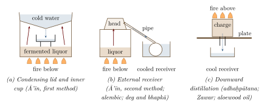

Chapter 14: Kīmiyā and ʿAraq: Islamic Alchemy, Distillation and the Indo-Persian World¶
14.1 Al-Kīmiyā¶
From the 11th century onwards much of the chemical and metallurgical life of the subcontinent took place in a Persianate world. The mints, arsenals, perfumeries and workshops of the Delhi Sultanate, the regional sultanates and the Mughal empire were run in Persian; their physicians practised the Greco-Arabic medicine known in India as Unani (Volume 13, Āyurveda); and their learned men read, copied and wrote works on kīmiyā, the Arabic and Persian name for alchemy. This chapter considers that tradition in India, its meeting with the Sanskrit rasa literature, and the technique most closely associated with it, distillation. Chapter 2 has already compared rasaśāstra with Arabic alchemy in general terms; here the emphasis is on contacts and exchanges.
Arabic al-kīmiyāʾ is derived from a Greek word of uncertain origin, and has given English both “alchemy” and “chemistry”. Other words of the laboratory came the same way: “alembic” from al-anbīq (Greek ambix), “elixir” from al-iksīr (Greek xērion, a dry powder), and “alkali” from al-qily, the ash of saltwort (Chapter 13). Arabic alchemy took over Greek theories of the transmutation of metals and much Greek apparatus, but from the 9th century it developed a character of its own. Two bodies of writing were especially influential (Principe 2013; Pormann and Savage-Smith 2007):
-
The Jābirian corpus, a large collection of treatises attributed to Jābir ibn Ḥayyān, who is said to have lived in the 8th century, but written mostly in the late 9th and 10th centuries by several hands. It developed the theory that all metals are composed of two principles, “sulphur” and “mercury”, in different proportions and degrees of purity, and a numerical theory of the “balance” of qualities in substances.
-
The physician Abū Bakr al-Rāzī (d. c. 925), whose alchemical works, above all the Book of Secrets (Kitāb al-asrār), are practical manuals. Al-Rāzī classified the substances used in the laboratory into mineral, vegetable and animal, and divided the minerals into “spirits” (volatile substances: mercury, sal ammoniac, sulphur and the arsenic sulphides), “bodies” (the metals), stones, vitriols, boraxes and salts. He described the apparatus of the laboratory—furnaces, crucibles, the cucurbit (qarʿ) and alembic (anbīq) for distillation, the aludel (al-uthāl) for sublimation—and operations such as distillation, sublimation, calcination, solution and coagulation.
The philosopher-physician Ibn Sīnā (Avicenna, d. 1037) offered a simpler and more influential grouping of minerals in the section on mineralogy of his encyclopaedic Book of Healing (Kitāb al-shifāʾ): stones, “fusibles” (the metals), “sulphurs” (combustible minerals) and salts. Translated into Latin as a treatise on minerals, it shaped European mineral classification for centuries. Like the classes of the Rasaratnasamuccaya (Table 1.2), these schemes grouped substances by their behaviour—whether they melt, burn, dissolve or sublime—rather than by a theory of composition; the resemblance reflects a common practical experience of the laboratory and need not imply a historical connection.
Arabic alchemy did not go unchallenged. Ibn Sīnā himself argued that the species of metals could not be transformed into one another, though their appearance might be imitated, and the historian Ibn Khaldūn (d. 1406) treated the pursuit of alchemical gold as a delusion that ruined its practitioners. Yet the practical knowledge accumulated by the alchemists—their classification of salts, their techniques of distillation and sublimation, their apparatus—passed into pharmacy, perfumery, metallurgy and, through Latin translations from the 12th century, into European chemistry (Principe 2013).
14.2 India in Arabic Mineralogy and Pharmacy¶
India entered Arabic science long before Muslim rule was established in the subcontinent. In Abbasid Baghdad, in the late 8th and 9th centuries, Indian medical works attributed to Caraka and Suśruta were translated into Arabic, sometimes through Persian, and Indian physicians served at the court (Volume 13, Āyurveda). The bibliographer Ibn al-Nadīm, writing in 987, lists among the Indian books available in Arabic a treatise on poisons attributed to “Shānāq”, that is, Cāṇakya, which had passed from an Indian language into Persian and then into Arabic (Ibn al-Nadīm 1970). Indian materials were already familiar: Indian steel (hindī, Chapter 6), Indian camphor and aromatics, the myrobalan (Arabic halīlaj, through Persian from Sanskrit harītakī), and the tamarind, whose English name comes from Arabic tamr hindī, “Indian date”.
14.2.1 Al-Bīrūnī¶
The most informed Arabic writer on Indian science, Abū Rayḥān al-Bīrūnī (973–after 1050), spent many years in the north-west of the subcontinent in the service of the Ghaznavid sultans and learned Sanskrit. His India (c. 1030) contains a chapter on the Indian sciences that, in his view, preyed on the credulity of the ignorant, in which he discusses rasāyana (Sachau 1888). He describes it as an art peculiar to the Indians, resembling alchemy, which consists of operations, drugs and compound medicines, most of them taken from plants, and whose purpose is to restore the health of the sick and the youth of the old. He reports the reputation of a Nāgārjuna of Daihak, near Somnāth, as a master of the art (Chapter 1) and retells a story about an adept called Vyāḍi who spent a fortune in search of the elixir and, according to the tale, gained the power of flight when a few drops of it touched him by accident. Al-Bīrūnī treats these stories with irony, and he observes that the Indians did not pay particular attention to alchemy, though no nation, in his view, was entirely free of it. His account is valuable less for its detail than for its date: it shows that by about 1030 an Indian art of elixirs, called rasāyana and linked to the name of Nāgārjuna, was known and discussed in north-western India—about the time when the earliest surviving rasa texts were being composed (Chapter 2).
Al-Bīrūnī also wrote two works that bear more directly on chemistry. His book on precious stones and metals, the Kitāb al-jamāhir, is described in Section 10.10 (al-Bīrūnī, Abū Rayḥān 1989). His late work on pharmacy, the Kitāb al-ṣaydana, lists drugs, many of them minerals, with their names in Arabic, Persian, Greek, Syriac and Indian languages (al-Bīrūnī, Abū Rayḥān 1973). Together they make al-Bīrūnī an exceptional witness, one who set Indian knowledge of materials systematically beside that of the Greek and Islamic traditions.
14.3 Kīmiyā in Sultanate and Mughal India¶
With the Ghaznavid conquest of the Punjab in the early 11th century and the foundation of the Delhi Sultanate at the end of the 12th, Persian became the language of government and high culture across much of the subcontinent, and the Persian scientific literature—including works on alchemy, often in the form of short treatises, recipe collections and sections of encyclopaedias—came with it. Manuscripts of such works were copied in India and survive in collections such as the Khuda Bakhsh Oriental Public Library at Patna, the Raza Library at Rampur and the Salar Jung Museum at Hyderabad. Unlike the Persian medical literature of India, which has been studied in some detail (Volume 13), the Indo-Persian alchemical literature has hardly been surveyed, and its relationship to the Sanskrit rasa texts is largely unexplored.
14.3.1 Alchemy as Metaphor¶
Much of what educated Indo-Muslims read about kīmiyā was not practical at all. In Sufi writing alchemy was a metaphor for the transformation of the soul. The most widely read example is The Alchemy of Happiness (Kīmiyā-yi saʿādat), al-Ghazālī’s Persian work on the religious life (completed c. 1105), whose title presents spiritual discipline as the true alchemy that turns the base self into gold. In the hagiographies of Indian Sufi saints the master whose glance or company transforms a disciple is often compared to the philosophers’ stone, and stories of saints who could turn copper into gold, but scorned to do so, are common. The parallel with the rasa texts’ joining of metallic and bodily perfection (Section 1.7) is real, but the emphasis is different: in Sufi usage the metal is usually a figure of speech, whereas the rasa texts meant their mercury quite literally.
14.3.2 Alchemy at Court¶
At the Mughal court, alchemical theory belonged to natural philosophy. Abuʾl Faẓl’s chapters on the origin of metals in the Āʾīn-i Akbarī set out the sulphur–mercury theory of the Islamic philosophers alongside a description of the practice of the imperial mint, and the two sit side by side without either being derived from the other (Section 8.13). Transmutation itself had a dubious reputation. Persian, vernacular and European writers of the 16th and 17th centuries tell of alchemists who promised gold to princes and merchants, and of wandering ascetics credited with the secret of making it; the figure of the alchemical jogī, heir to the Siddha and Nāth traditions discussed in Chapter 2, was familiar in north Indian popular culture (White 1996). Such stories say more about the hopes and suspicions that alchemy aroused than about laboratory practice.
14.3.3 Kushta: Calcined Metals in Unani Pharmacy¶
The most durable practical meeting of the two traditions was in pharmacy. Indian Unani pharmacy includes a class of calcined metallic and mineral preparations called kushta (Persian, “killed”), made from gold, silver, tin, iron, pearl, coral and other materials. Both the name and the idea correspond closely to the māraṇa (“killing”) and bhasma of rasaśāstra (Chapter 9), and kushtas are characteristic of Unani as practised in South Asia rather than of the Greco-Arabic medicine of the classical Islamic world. It is often suggested that they developed in India through the contact of ḥakīms with Āyurvedic practice, a view that fits the wider pattern of exchange between the two medical systems described in Volume 13 (Alavi 2008); the detailed history has yet to be written. Kushtas raise the same safety questions as bhasmas.
14.4 Where Kīmiyā Met Rasaśāstra¶
Did Islamic alchemy influence the Sanskrit rasa literature, or the reverse? The question has been asked since P. C. Ray, and it remains open (Ray 1956; White 1996). The chronology allows contact: Arabic alchemy was flourishing in the 9th and 10th centuries, Muslim rule was established in Sindh from the early 8th century and in the Punjab from the early 11th, and the earliest rasa texts belong to about the 10th–11th centuries. The two traditions also share a striking idea, the pairing of mercury and sulphur as the generative principles of metals—in Arabic theory as the components from which metals are formed, in the rasa texts as the seed of Śiva and the menstrual blood of the Goddess. But the rasa texts’ Tantric framework, their eighteen saṃskāras of mercury and their goal of bodily liberation have no Arabic counterpart, and no Sanskrit translation of an Arabic alchemical work, or Arabic translation of a Sanskrit one, is known. The best evidence of contact lies not in theory but in materials and words (Table 14.1).
| Sanskrit | Persian / Arabic | Comment |
|---|---|---|
| navasāra, navasādara | nawshādur / nūshādir | Sal ammoniac; a key reagent of Arabic alchemy; the Sanskrit word is generally regarded as a loan (Chapter 13) |
| ṭaṅkaṇa | tinkār, būra / būraq | Borax, from Tibet; the Persian tinkār (English “tincal”) comes from the Sanskrit |
| tuttha; kharpara, rasaka | tūtiyā | Sanskrit tuttha is blue vitriol; Persian tūtiyā is zinc oxide (“tutty”), and rūḥ-i tūtiyā, “spirit of tutty”, metallic zinc (Chapter 7) |
| pārada, rasa | sīmāb / zībaq | Mercury |
| hiṅgula | shangarf | Cinnabar; any relation between the two names is uncertain |
| māraṇa, bhasma | kushta | “Killing” a metal; calcined preparation |
| arka (late) | ʿaraq | Distillate; the Sanskrit usage appears to follow the Arabic |
14.4.1 Sal Ammoniac and the Rasa Texts¶
Sal ammoniac is the clearest case. It was a central reagent in Arabic alchemy from the late 9th century, it was traded from Central Asia, and its Arabic and Persian names have a plausible derivative in Sanskrit navasāra. The substance does not appear in the classical medical compendia; in the rasa texts it appears among the “common” minerals (sādhāraṇa rasa) of the Rasaratnasamuccaya (Table 1.2). This does not prove that the rasa alchemists learned its use from Muslim practitioners—the substance could have been obtained from kiln soot locally—but it is consistent with the movement of a material and its name from the Persianate world into Sanskrit.
14.4.2 Tutty and Zinc¶
The Persian tūtiyā illustrates how the two traditions approached the same material from different directions. In Iran and the Islamic world, tutty was the zinc oxide that collects as a white crust on the upper parts of furnaces in which zinc-bearing ores are roasted or brass is made, and it was prized as an eye medicine. Marco Polo describes its manufacture at Cobinan (Kuhbanan) in the province of Kerman in the late 13th century: an ore was heated in a furnace with an iron grating above it, and the vapour rising from it condensed on the grating as tutty, while the residue left below was sold as “spodium” (Yule and Cordier 1903). This is the deliberate collection of a sublimate, but the product is an oxide; the metal itself escaped. The Indian achievement, at Zawar and in the rasa texts’ extraction of the “essence” (sattva) of calamine, was to condense the zinc vapour as metal by excluding air (Chapter 7). When the Āʾīn-i Akbarī calls metallic zinc rūḥ-i tūtiyā, “the spirit of tutty”, it uses Persian vocabulary for an Indian product. Whether the Persian word itself derives from Sanskrit tuttha, as has been suggested, is uncertain; the substances the two words denote are different.
14.4.3 New Diseases and New Medicines¶
The later rasa literature also shows how the tradition absorbed new knowledge from outside. Bhāvamiśra’s Bhāvaprakāśa (16th century) describes a disease it calls phiraṅgaroga, “the Frankish disease”, which is syphilis, brought to India in the wake of the Portuguese; it prescribes mercurial preparations for it, as did contemporary European and Islamic physicians, along with the newly imported China root (copacīnī, the rhizome of a Smilax species) that the Portuguese also promoted as a remedy (Volume 13). Among the mercurials used for the disease was rasakarpūra, “mercury-camphor”, a white sublimate usually identified as a mercury chloride, made by heating mercury with salts. Its preparation depends on the same chemistry of chlorides and sublimation that Arabic alchemists exploited with sal ammoniac and common salt. Like all mercury compounds it is highly toxic; mercurous chloride (calomel) remained a standard European medicine into the 20th century, with well-documented harmful effects (Chapter 3).
The overall picture is of two traditions that developed largely independently, each with its own theory and goals, which came into contact from the 11th century onwards and exchanged materials, names and techniques—above all in pharmacy, metallurgy and distillation—more readily than ideas.
14.5 The Still: Distillation in India¶
Distillation—heating a liquid and condensing its vapour—underlies the rasa texts’ operations on mercury (Chapter 3), the zinc retorts of Zawar (Chapter 7) and, in other traditions, the making of spirits and perfumes.
14.5.1 Gandhāra¶
F. R. Allchin argued in 1979 that pottery vessels found at Shaikhan Dheri in Gandhara and at Taxila, of the last centuries BCE and early centuries CE, were parts of stills used to distil alcoholic spirits, and that India might be “the ancient home of distillation” (Allchin 1979). The interpretation is plausible but not universally accepted; the vessels could have had other uses, and the textual evidence for distilled spirits in early India is uncertain. Fermented liquors (surā, āsava, ariṣṭa), by contrast, are amply documented (Chapter 1, and Volume 15, Kṛṣi and Jīva Vijñāna). In Allchin’s reconstruction the Gandhāran still consisted of a large globular pot heated over a fire, a head or condenser, and a tube leading the vapour sideways and down into a separate receiving vessel that could be cooled—an arrangement with an external receiver, in contrast to stills in which the condensate is caught inside the heated vessel.
14.5.2 The Rasa Laboratory¶
The rasa texts describe apparatus for upward, downward and sideways “falling” (ūrdhvapātana, adhaḥpātana, tiryakpātana) of mercury, and the vidyādharayantra and related devices in which a vessel with a cooled upper part receives a sublimate or distillate (Chapter 2). These are distillation and sublimation in the technical sense, but their purpose was to separate or recover mercury, not to make spirits or perfumes. The downward variant—in which the charge is heated from above and the vapour driven down into a cooler vessel below—corresponds to the method used on an industrial scale for zinc at Zawar (Chapter 7). The upward apparatus has a close functional parallel in the Arabic aludel, a vessel for sublimation in which the vapour of a heated substance rises into one or more heads and condenses on their cooler walls. In the vidyādharayantra, as the texts describe it, the cooling is made more effective by keeping water on top of the upper vessel, the same device that the Āʾīn-i Akbarī describes for distilling spirits (below). Such parallels show how a few physical principles—heat below, a cooled surface above, a sealed joint between them—were applied independently or by borrowing across many traditions, and they make the direction of any borrowing hard to establish.
14.5.3 The Alembic¶
The Arabic qarʿ and anbīq—a cucurbit or boiling vessel surmounted by a head with a channel round its inner rim and a spout to carry the condensate to an external receiver—were the standard stills of Islamic alchemy, pharmacy and perfumery. In Iran, especially in the province of Fars, rose-water was distilled on a commercial scale by the 10th century and exported widely, including to India and China (al-Hassan and Hill 1986; Forbes 1948). With the Persianate courts of the Sultanate and Mughal periods, the alembic, the distilled waters of Islamic pharmacy and the distillation of spirits became part of north Indian urban life (Habib 2008).
14.5.4 Spirits in the Āʾīn-i Akbarī¶
For the late 16th century the evidence is explicit. In its account of the sugar-cane, the Āʾīn-i Akbarī describes the fermentation of a liquor from cane or brown sugar and three ways of distilling it into arrack (Abuʾl-Faẓl ʿAllāmī 1873). In the first, the liquor was heated in a brass vessel with a cup fixed inside it; the vessel was closed with an inverted lid sealed with clay, cold water was poured on the lid and changed as it grew warm, and the vapour condensed on the lid and dripped into the cup. In the second, the vessel was closed with an earthen pot from which two pipes led to receiving jars standing in cold water. In the third, a hollow-handled ladle fixed inside the pot carried the condensate out through a pipe into a jar, while the lid was kept full of cold water. Some distillers, it adds, distilled the spirit twice to make it stronger. Distilled spirits were thus well established in Mughal India, and the colonial authorities later taxed country liquor heavily.
The three methods correspond to the principal types of pre-modern still (Figure 14.1). In Joseph Needham’s comparative study of chemical apparatus, stills in which the vapour condenses on a cooled, concave lid and drips into a catch-cup inside the vessel are characteristic of East and Central Asia, whereas the Hellenistic and Arabic alembic, like Allchin’s Gandhāran still, leads the condensate to an external receiver (Needham et al. 1980). The Āʾīn’s first method is of the inner-cup type; its second and third, with their pipes and cooled receivers, are of the external type. Mughal India thus used both traditions side by side.

14.5.5 Country Spirits under Colonial Rule¶
Village distillation of spirits from sugar, molasses, palm sap and, in central India, the flowers of the mahua tree (Madhuca longifolia) continued throughout the colonial period, using simple pot stills of earthenware or copper with external receivers. The colonial excise systems alternated between licensing such “outstills” and concentrating production in central distilleries that were easier to supervise and tax. Restrictions on home distillation, especially of mahua spirit, bore heavily on Adivasi communities for whom it had ritual and social importance (Volume 23, Jana–Jāti). On the west coast, Portuguese Goa developed its own distilled spirit, feni, made from fermented coconut-palm sap and, after the Portuguese introduced the cashew tree from Brazil in the 16th century, from the juice of the cashew apple; it is still distilled in small pot stills, and cashew feni has been registered as a geographical indication. The Portuguese introduction of the cashew is a reminder that the raw materials of Indian chemistry, like its techniques, were enlarged by exchange across the oceans after 1500.
14.6 ʿAraq and Arka: Distilled Waters and Perfumes¶
14.6.1 Distilled Waters¶
Arabic ʿaraq, “sweat”, the drops that form on the head of a still, gave its name both to distilled waters and to distilled spirits (whence “arrack”). Unani pharmacy uses many distilled waters (ʿaraqiyāt) of flowers, seeds and herbs, among them rose-water and the water of fennel (Volume 13). Later Sanskrit adopted arka in the same sense, a usage that appears to follow the Arabic and that is distinct from the older meaning of arka as the sun or as the plant Calotropis. A work devoted to such distillates, the Arkaprakāśa, attributed to Rāvaṇa, belongs to the late period of the medical literature (Meulenbeld 1999–2002), and modern Āyurvedic pharmacy recognises arka as a class of preparations made by distilling plant materials with water.
14.6.2 Perfumery¶
Indian perfumery has a long literary history, from the chapter on compounding perfumes (gandhayukti) in Varāhamihira’s Bṛhatsaṃhitā to the later Sanskrit works on perfume-making surveyed by James McHugh (Bhat 1981–1982; McHugh 2012). The aromatic materials, their trade, and the history of perfumery as a craft and a courtly art are treated in Volume 15, Kṛṣi and Jīva Vijñāna. The classical Sanskrit perfumer worked mainly by blending, steeping, cooking and fumigating aromatic materials; distillation became important only later, and largely through the Persianate tradition.
The Mughal court, as described in the Āʾīn-i Akbarī, consumed perfumes on a lavish scale. Its chapter on perfumes gives recipes for compound perfumes and incenses based on ambergris, aloewood, sandalwood, musk and rose-water, lists perfumes with their prices, and describes the preparation of some of them (Āʾīn 1.30) (Abuʾl-Faẓl ʿAllāmī 1873). One of these preparations is a distillation per descensum. To obtain the oil of aloewood (chūwa), a small bottle coated with clay was filled with chips of the wood and set upside down, its neck passing through a hole in a vessel to rest just above a cup of water; a gentle fire of dried dung was lit on top, and the oil that ran down from the heated wood gathered on the surface of the water, from which it was collected and washed. The principle is that of the rasa texts’ downward distillation (adhaḥpātana) and of the Zawar zinc retorts (Chapter 7), applied here to a perfume.
Jahāngīr records in his memoirs that the attar (ʿiṭr) of roses was discovered in his reign by the mother of Nūr Jahān, who noticed an oily film forming on rose-water and collected it; he named the perfume after himself (Thackston 1999). The account shows that the separation of rose oil was claimed and celebrated at his court; it does not show that rose oil had never been obtained before elsewhere, and the story is discussed in Volume 15.
14.6.3 The Kannauj Method¶
The distilled perfume oils known as ʿiṭr or attar are made today, especially at Kannauj in Uttar Pradesh, by a method of hydrodistillation: flowers or other aromatic materials are heated with water in a large copper still (deg), and the vapour is led through a bamboo pipe into a receiving vessel (bhapkā) containing sandalwood oil, which absorbs the fragrant components; the process is repeated with fresh flowers until the oil is saturated. The method, described more fully in Volume 15, is an external-receiver still (Figure 14.1b) with an unusual feature: the receiver contains an oil that dissolves the volatile aromatic compounds as they condense, while the water that condenses with them settles out and is drawn off. Sandalwood oil, itself only slightly volatile, serves as solvent and fixative, slowing the evaporation of the lighter scents. The “earth” attar (miṭṭī) is distilled from discs of baked clay and captures the smell of rain on dry earth, a smell that modern chemistry attributes largely to compounds produced by soil micro-organisms.
14.7 The Physical Chemistry of Distillation¶
Distillation works because the components of a mixture differ in volatility. When a fermented liquor containing a few per cent of ethanol is heated, the vapour that rises is richer in ethanol than the liquid, because ethanol (boiling point 78 °C) is more volatile than water; condensed, it gives a liquid much stronger than the original. One distillation in a simple pot still with a cooled receiver yields a spirit of moderate strength, and a second distillation of that spirit—the “double distilling” that the Āʾīn-i Akbarī mentions—yields a stronger one. Even repeated distillation cannot remove all the water, because ethanol and water form a constant-boiling mixture (an azeotrope) containing about 95–96 per cent ethanol by weight; absolute alcohol requires other methods. A simple still also concentrates other volatile substances present in the liquor, among them small amounts of methanol and higher alcohols, which is why skilled distillers discarded the first and last portions of a run.
Perfume distillation rests on a different principle. Most of the aromatic compounds of flowers, woods and roots—terpenes, aromatic alcohols and esters—boil at temperatures well above that of water, often between 150 and 300 °C. But when such compounds are heated together with water, the mixture boils when the combined vapour pressures of water and oil equal the pressure of the atmosphere, which happens below 100 °C; the steam therefore carries the oils over at a temperature at which they are not decomposed. This is the principle of steam distillation and of the Kannauj deg. Because the oils are only slightly soluble in water, they separate from the condensed water as a film or are captured by an absorbent oil.
The distillation and sublimation of metals and their compounds follow the same physics at higher temperatures. Mercury boils at 357 °C and is readily distilled from its ores or amalgams; zinc boils at 907 °C, below the temperature at which its oxide is reduced, so that it can be won only as a vapour and condensed out of contact with air (Chapter 7); sal ammoniac and calomel (mercurous chloride) sublime without melting. The rasa alchemists, the zinc smelters of Zawar and the perfumers of the Mughal court were exploiting the same property of matter with very different apparatus and purposes.
14.8 From Kīmiyā to Chemistry¶
When modern chemistry was taught in Indian schools and colleges in the 19th century, the old words were given new meanings. In Urdu, as in modern Arabic, kīmiyā came to mean chemistry; in Hindi and several other Indian languages the Sanskrit rasāyana (Hindi rasāyan, rasāyan-vijñān) was adopted instead, a choice that linked the new science to the old alchemical and medical tradition. P. C. Ray’s decision to call his history of the Sanskrit sources “Hindu chemistry” belongs to the same moment (Chapter 15). In both cases a word for alchemy, with its hopes of gold and immortality, became the name of a laboratory science that had renounced those hopes, and the persistence of the old words has contributed to the modern habit of reading the alchemical texts as early chemistry.
Health and Safety Note
Mercury compounds, including rasakarpūra and calomel, are highly toxic, and metal-based kushtas raise the same concerns as bhasmas (Section 1.1). Distilling spirits outside licensed premises is illegal in India and dangerous: mass poisonings from illicit liquor have been caused mainly by methanol, usually added as an adulterant. No procedures or proportions are given.
What Is Secure and What Is Debated
Secure: Arabic and Persian kīmiyā reached India with the Persianate courts from the 11th century; al-Bīrūnī knew and described Indian rasāyana about 1030; materials and words—sal ammoniac, borax, tutty, kushta, arka—passed between the traditions; and the Āʾīn-i Akbarī describes stills of both the inner-cup and the external-receiver types. Debated: whether either alchemy influenced the theory of the other; whether Allchin’s Gandhāran vessels were stills; and the history of the Indo-Persian alchemical literature, which has hardly been studied.